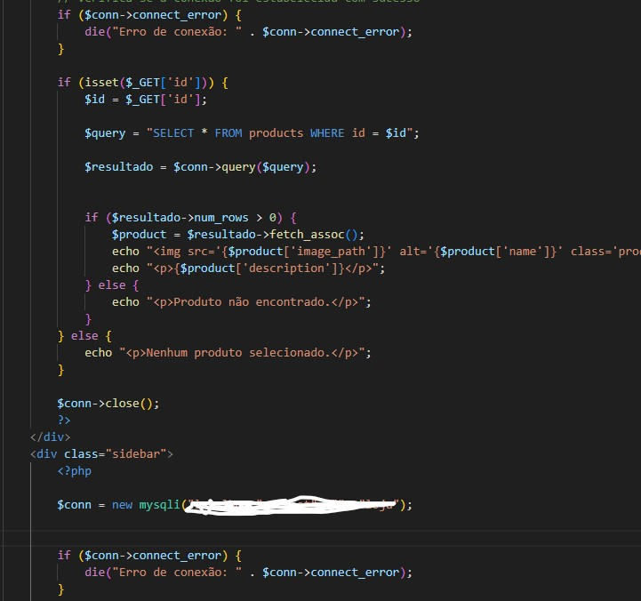
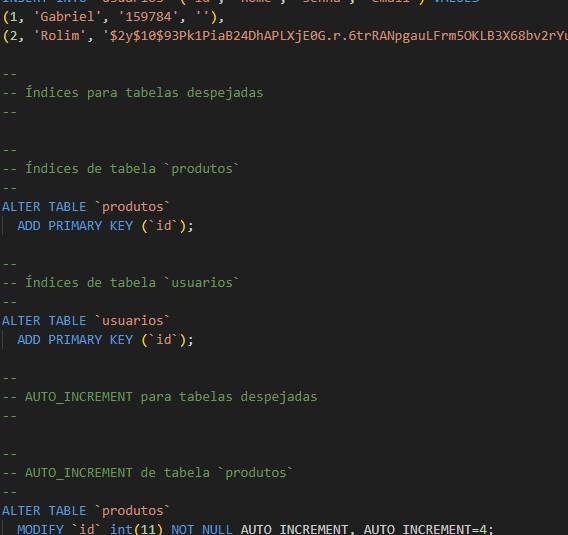
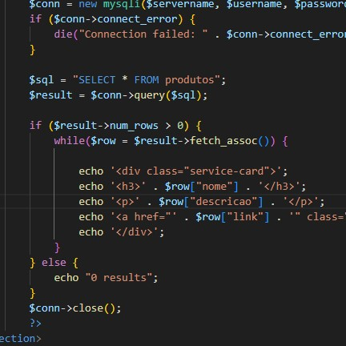

Eu sou alguém que sempre tenta ver o lado bom das coisas e está constantemente buscando maneiras de ajudar os outros. Como filho, me esforço ao máximo para cuidar dos meus pais e apoiá-los em tudo que precisam. Como amigo, acredito que sou um bom ouvinte e estou sempre lá para ajudar meus amigos, não importa a situação. Como estudante, dedico muito tempo aos meus estudos, especialmente na área de tecnologia da informação, onde me destaco em linguagens de programação como PHP e estou começando a aprender Java. Tenho uma paixão por carros JDM e trilhas, que remontam à minha infância e me oferecem momentos de reflexão enquanto ando de mountain bike. Também tenho um hobby de exploração urbana, onde gosto de imaginar como eram os lugares antes de serem abandonados. Uma grande realização para mim foi entrar na Etec MCM e começar cursos no Senai, que estão me ajudando a construir meu futuro. No entanto, tenho que admitir que, se alguém me decepciona, posso guardar ressentimentos difíceis de superar. Pois valorizo muito a confiança e a lealdade nas relações interpessoais.
Quem sou eu?
| Nível de conhecimento das linguagens | |
|---|---|
| PHP | |
| HTML | |
| Java | |
| CSS | |
Alguns Projetos




